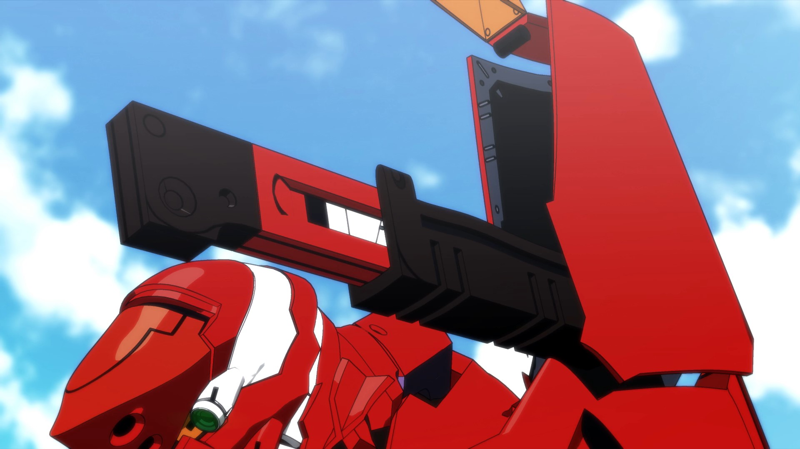
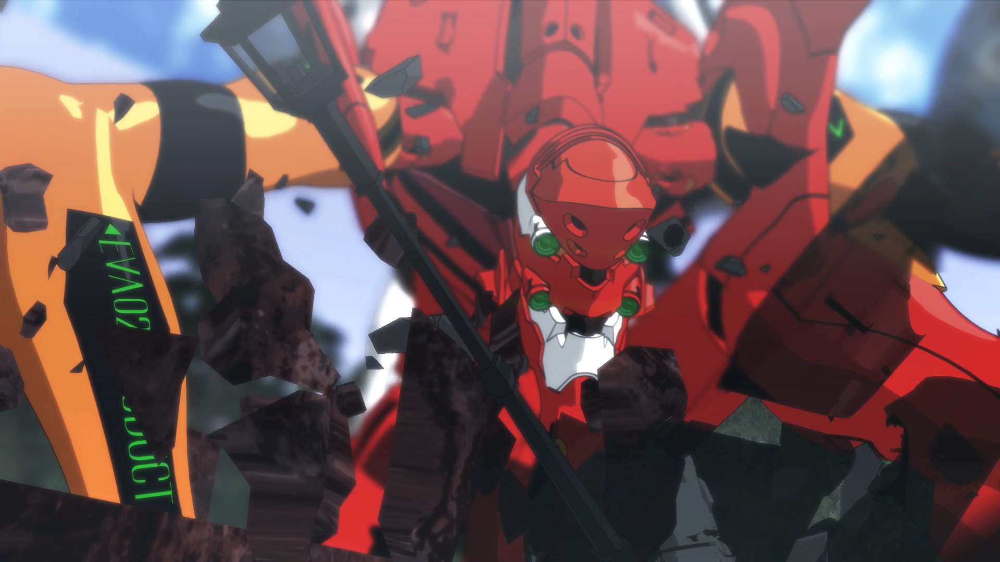
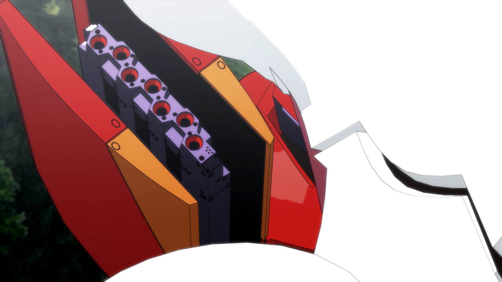
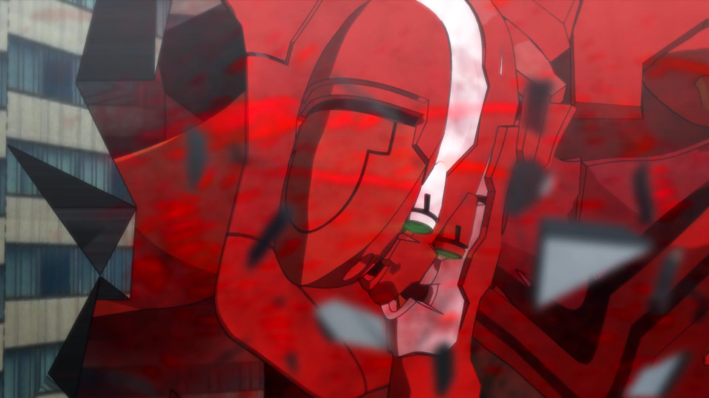
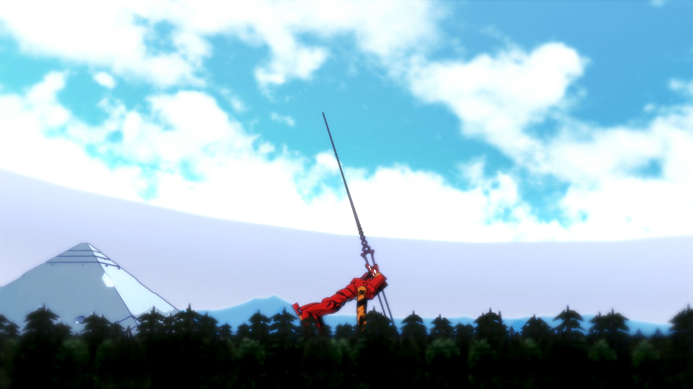
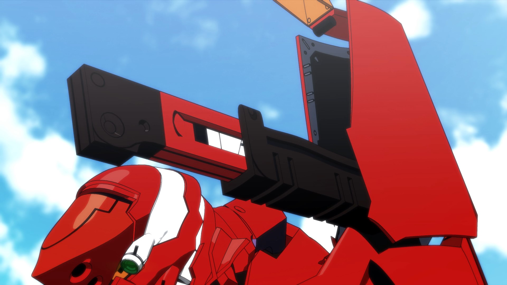
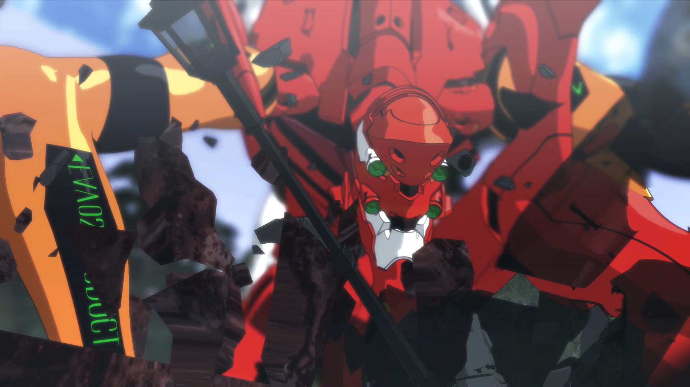
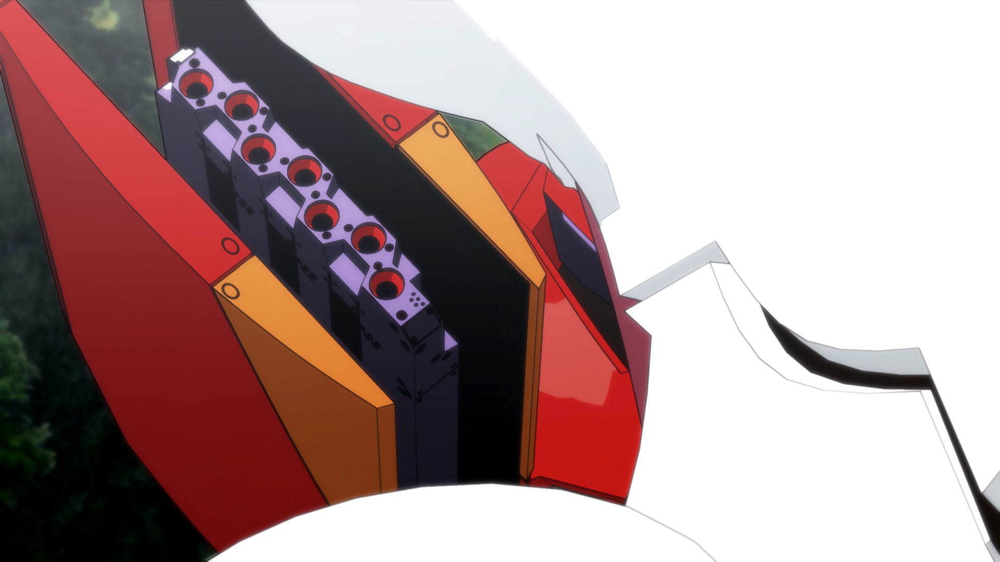
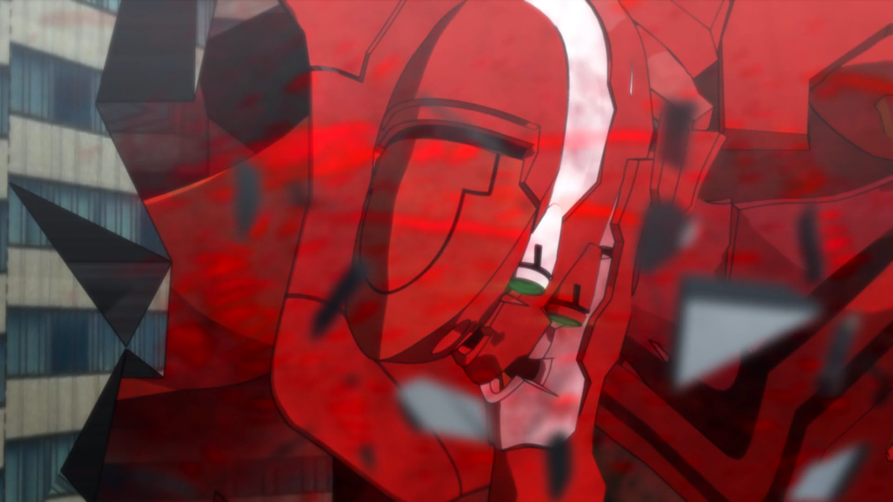
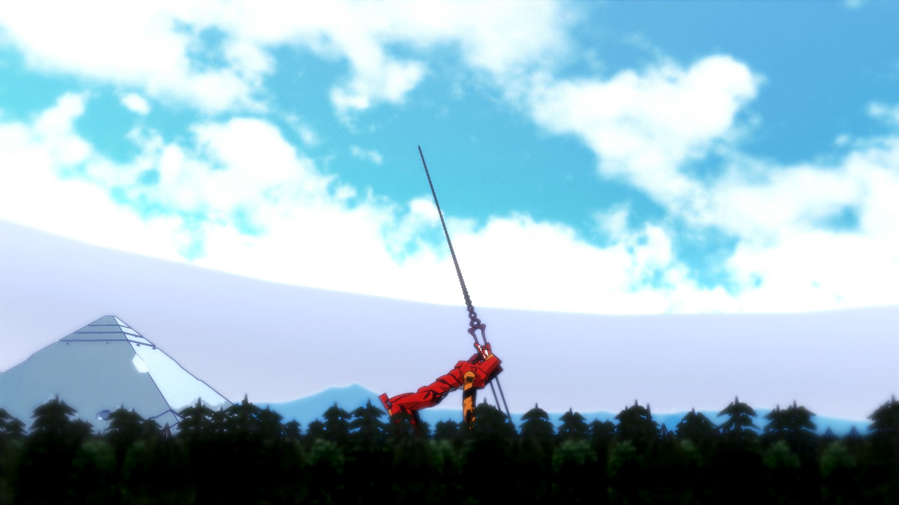

About
EVA02 vs MASS PRODUCTION EVA
使用ソフト: MMD / MME / PMXEditor / Aviutl
制作期間: 2020/04 - 2020/12
URL: https://www.youtube.com/watch?v=dfxdGOVQH1I
コーディング学習サイト「Codestep」様の初級編練習サイト「Xxxxx Ashley - Photographer」の模写コーディングです。
1カラムのポートフォリオサイトの練習として。
内容は、2020年に8か月かけて制作したエヴァMMD再現動画の特設サイト風に仕上げております。
GALLERY
 









News
- 2021.01.30
- 【メイキング】メイキング後編公開
- 2021.01.23
- 【メイキング】メイキング前編公開
- 2020.12.22
- 【完成】本編映像公開
- 2020.11.27
- 【本選1か月前】予選映像公開
- 2020.09.19
- 【中間報告】アクションフェーズ、モーション仮組み完了
- 2020.05.12
- 【告知】ティザー映像公開
- 2020.04.23
- 【モデルプレリギング】フリーズ前のモデルを使った画像を公開
Contact
- NAME
- MESSAGE